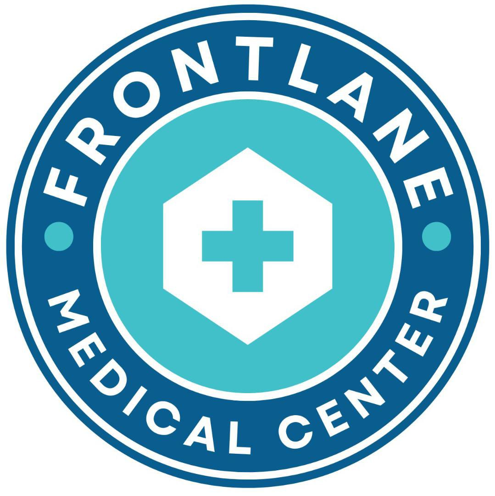
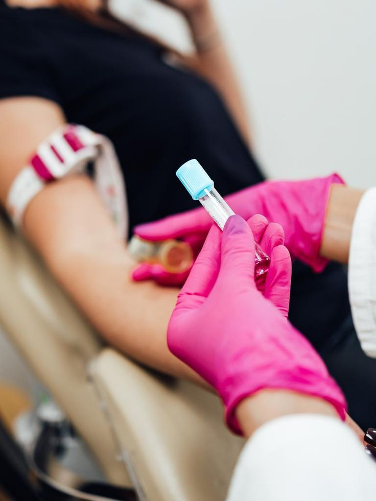

FRONTLANE MEDICAL CENTER
Safe Abortion & Women's Health Clinic — Kampala, Uganda

Safe Abortion & Women's Health Clinic — Kampala, Uganda
Frontlane Medical Center provides professional abortion care in Kampala — medical abortion pills, surgical procedures, and complete women's reproductive health support. Licensed doctors, total privacy, available 24/7.
Comprehensive care from qualified medical professionals — delivered with complete confidentiality and compassion.
A safe, non-invasive option using FDA-approved medication. Carried out with full medical supervision and a 98% effectiveness rate.
Performed by experienced doctors in a sterile operating environment, with advanced pain management and same-day completion.
Specialised care for complex cases requiring advanced medical intervention, extended monitoring, and psychological support throughout.
Professional pre- and post-procedure counselling to help you make informed decisions and support your emotional wellbeing throughout the process.

Thorough pre-procedure screening to ensure your safety — including ultrasound dating, blood work, and STD testing.
Round-the-clock emergency support for urgent reproductive health needs, abortion-related complications, and critical care.
Thousands of women across Uganda trust us for safe, confidential, and compassionate reproductive healthcare.
Experienced gynecologists and reproductive health specialists, registered in Uganda.
Round-the-clock support for consultations, procedures, and emergencies — any day, any hour.
Your privacy is sacred. No records shared without your written consent. Ever.
No hidden fees. No surprises. The price you're quoted is the price you pay.
Fully equipped, accredited, and maintained to international medical safety standards.
Most procedures completed in a single visit — so you can recover at home, faster.
We've made our process straightforward, comfortable, and completely confidential from your first contact to full recovery.

Visit our clinic for a confidential medical examination, pregnancy confirmation, and ultrasound scan. Our doctors will determine your gestational age and recommend the safest procedure for your situation.

Your procedure — whether medical or surgical — is carried out in our fully equipped, sterile facility with licensed doctors, proper anaesthesia, and strict safety protocols. Most procedures are completed in a single visit.

After your procedure, you'll receive detailed recovery instructions, a scheduled follow-up appointment, and access to our 24/7 support line. We stay with you until you've fully recovered.
Real reviews from real patients — verified on Google.
Answers to common questions about our abortion procedures, safety, confidentiality, and aftercare.
Reach out for a confidential consultation. We respond within 2 hours during business hours.
+256 759 983 865
Kisaasi & Kireka - Kampala, Uganda
Mon–Sun: 7:00 AM – 10:00 PM
24/7 Emergency Line Available
info@frontlanemedicalcenter.site
For urgent medical emergencies, complications, or if you need immediate support, call us any time of day or night.
+256 759 983 865Fill in your details below. Our medical team will contact you privately within 2 hours.
Two convenient locations in Kampala — Kisaasi & Kireka. Available 24/7.
Kisaasi, Kampala, Uganda
Kireka, Kampala, Uganda